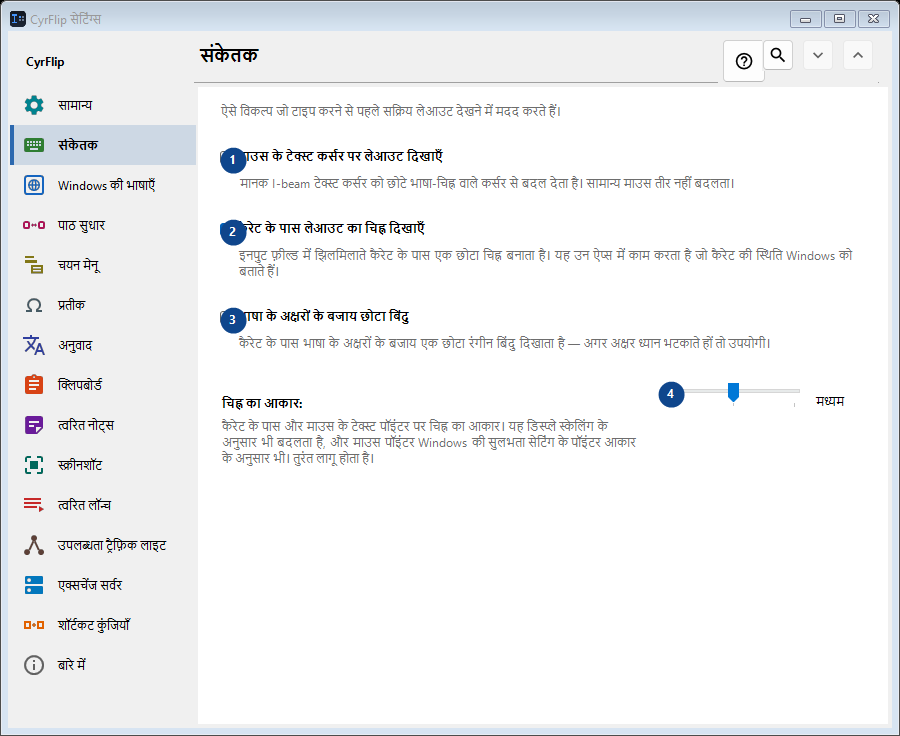
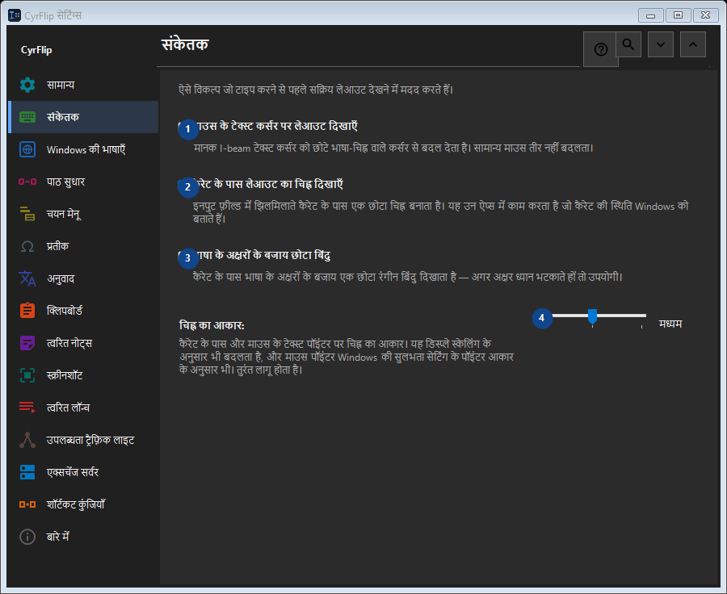

संकेतक
इसका उपयोग
ऐसे विकल्प जो टाइप करने से पहले सक्रिय लेआउट देखने में मदद करते हैं।


उपयोग का क्रम
सेटिंग तुरंत लागू होती हैं। कोई अनिवार्य क्रम नहीं है; नीचे दिए समूहों का उपयोग करें।
तत्व
1. माउस के टेक्स्ट कर्सर पर लेआउट दिखाएँ
मानक I-beam टेक्स्ट कर्सर को छोटे भाषा-चिह्न वाले कर्सर से बदल देता है। सामान्य माउस तीर नहीं बदलता।
आपके शॉर्टकट2. कैरेट के पास लेआउट का चिह्न दिखाएँ
इनपुट फ़ील्ड में झिलमिलाते कैरेट के पास एक छोटा चिह्न बनाता है। यह उन ऐप्स में काम करता है जो कैरेट की स्थिति Windows को बताते हैं।
आपके शॉर्टकट3. भाषा के अक्षरों के बजाय छोटा बिंदु
कैरेट के पास भाषा के अक्षरों के बजाय एक छोटा रंगीन बिंदु दिखाता है — अगर अक्षर ध्यान भटकाते हों तो उपयोगी।
आपके शॉर्टकट4. चिह्न का आकार
पास के लेबल के अनुसार मान चुनें या दर्ज करें। आगे बढ़ने से पहले जाँचें।
आपके शॉर्टकट